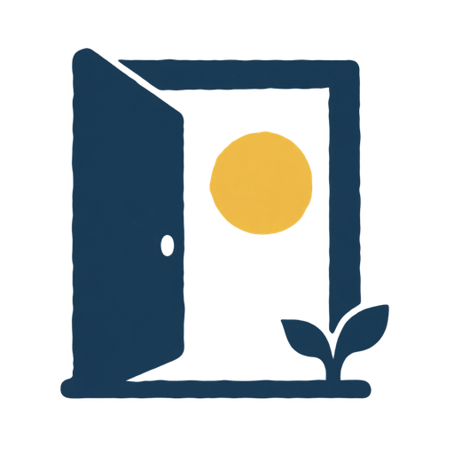
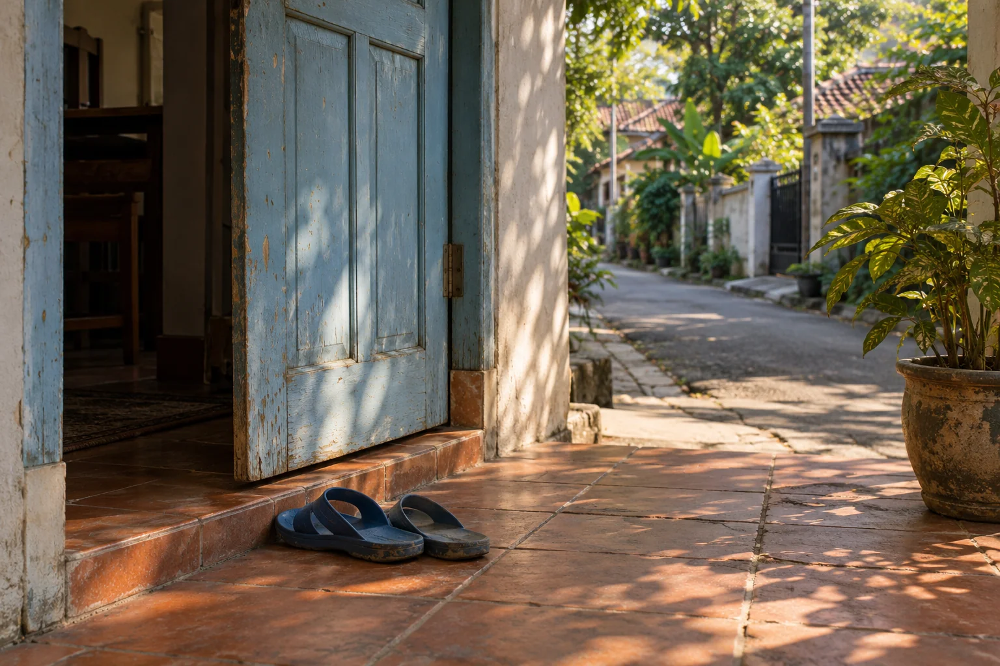

LISTEN5 MIN
THINGS TO DO / PLACES YOU KNOW
Find your quiet soundtrack
Let the world make the playlist for a moment.
A NOTE BEFORE YOU GO
Choose a familiar, safe place. If conditions feel wrong, try another day.

keluarA walk around the block. A seat on the porch.
A plant you've passed a hundred times.
Tell us what you feel like. We'll find you a short mission.
You can take it from there.

One initial download (~120 MB). No API key, account, or cloud inference. Your thoughts are processed on your device.
Let the world make the playlist for a moment.
Choose a familiar, safe place. If conditions feel wrong, try another day.
A curated preview. Enable local AI to match your words.
“Keluar sebentar” means
“step out for a moment.”
Open-source AI, running right here. Multilingual MiniLM matches your words to twelve curated missions. Your available time, energy, and access preferences filter the choices first.
We don't need your location. There's no account, feed, or streak. If you keep a reflection, it stays on this device. The model downloads from Hugging Face and the runtime from jsDelivr; your words aren't sent to an inference server.
Multilingual MiniLM (ONNX weights) · Transformers.js. Similarity is a ranking, not certainty. This app does not provide routes, weather forecasts, or species identification. Browser caches may be evicted; save a pocket card before heading out.
The doorstep image and door logo were made with GPT Image. The image is an illustration of an everyday place, not a photograph from an outdoor field trial.